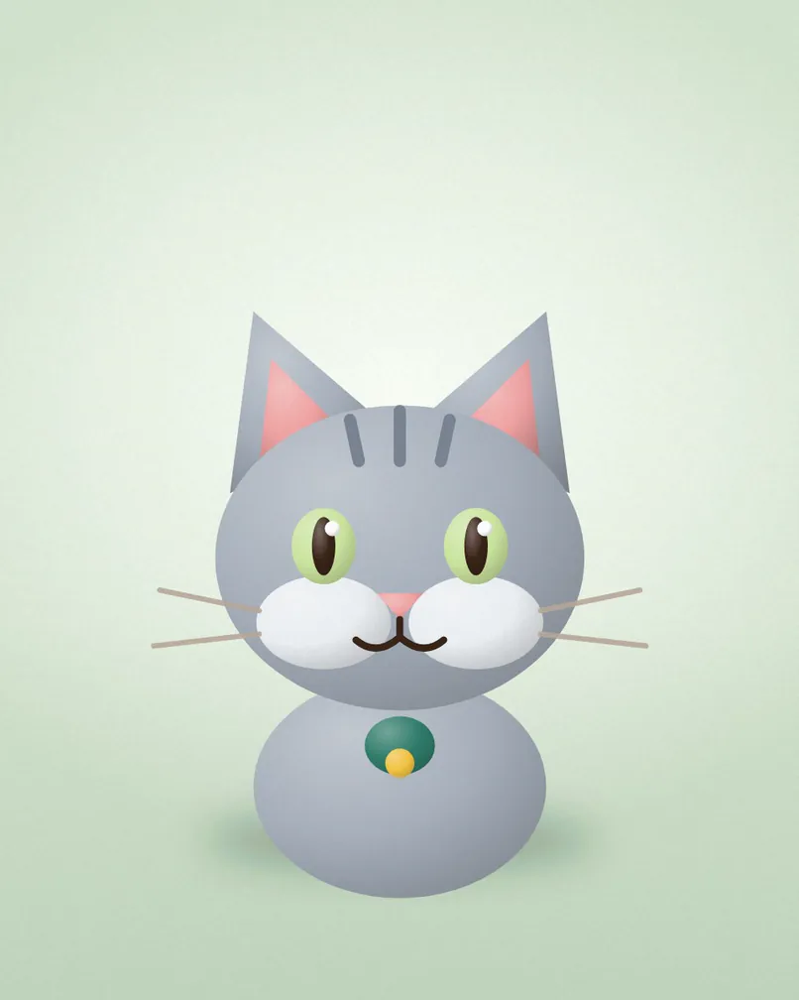
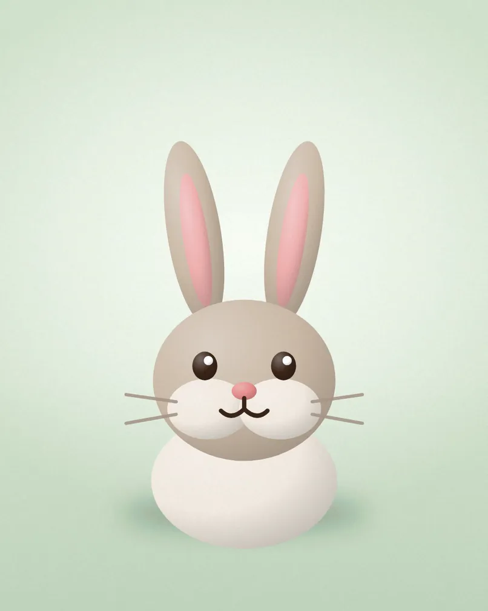

{{city}} · Caring since {{year_founded}}
A safe place to begin again.
{{tagline}}
Visiting hours {{hours_weekdays}}. Please book ahead for groups.




Our story
{{owner_name}} opened {{business_name}} in {{year_founded}} to give animals in need a second chance. Today our team and volunteers care for them every day of the year.
{{years_open}}years open
{{animals_rehomed}}animals rehomed
{{animals_in_care}}in our care today
Support the animals
Every gift goes straight to their care
We are a small charity and we depend on kind people. Give once, or every month, and we will show you exactly where it went.
- £10feeds a dog for a week
- £25pays for a vaccination and a health check
- £50neuters a cat so it can be rehomed
- £100covers a month of care for a rescued owl
Give £25You will finish on our secure donation page.
How adopting works
Three steps to a new friend
01
Meet
Visit us, walk the dogs and meet the animals who need a home.
02
Match
Tell us about your home and we help you find the right fit.
03
Take home
Complete the adoption form, then welcome them home.
Visit or adopt
{{address_line1}}, {{address_line2}}
{{phone}}
Plan a visit or ask to adopt
Send us a message and we will reply within a few days.
| Monday to Friday | {{hours_weekdays}} |
|---|---|
| Saturday | {{hours_saturday}} |
| Sunday | {{hours_sunday}} |
{{phone}}